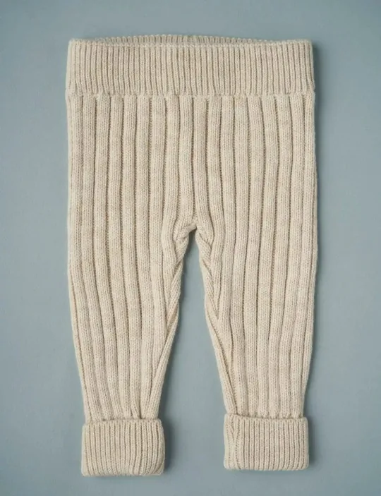

Наталья · мастер по вязанию
Вязаные вещи для детей
Детские бесшовные вязаные
штанишки
Цвет, пряжу, размер и стоимость согласуем до начала работы
От года до пяти лет
Бесшовное вязание
Анатомическая посадка
Натуральная пряжа
Обсудить штанишки во ВКонтакте

Бесшовно
— анатомическая посадка
Обсудить штанишки во ВКонтакте